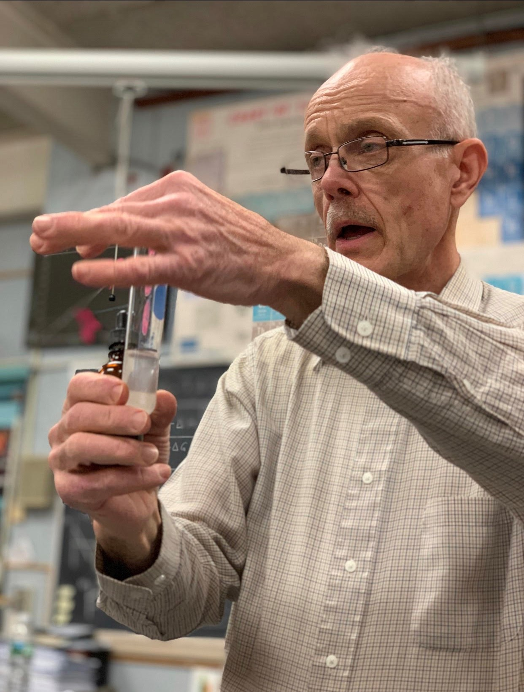

The main objectives of these programs are to have a greater understanding of density and to learn how to utilize and manipulate a caliper tool. Due to students' inability of conducting these experiment and having access to certain tools, this website offers a way of doing so virtually.
Phet Density Program
Caliper Simulator
About

The COVID-19 Pandemic has changed the way teaching is done. School closures and safety protocol prevent students from conducting research in a hands-on, physical environment. Mr. Bangs, along with his group of zero-period research students at the Roselle Park High School, collaborated to emulate the lab process in an online learning environment, enabling students to apply their knowledge into a real-world scenario.